Tendremos que disparar a 15 latas repartidas por el mapa.
Cuando disparemos a todas las latas, los zombies empezarán a llegar con cabezas de latas.
Estas son todas las ubicaciones:
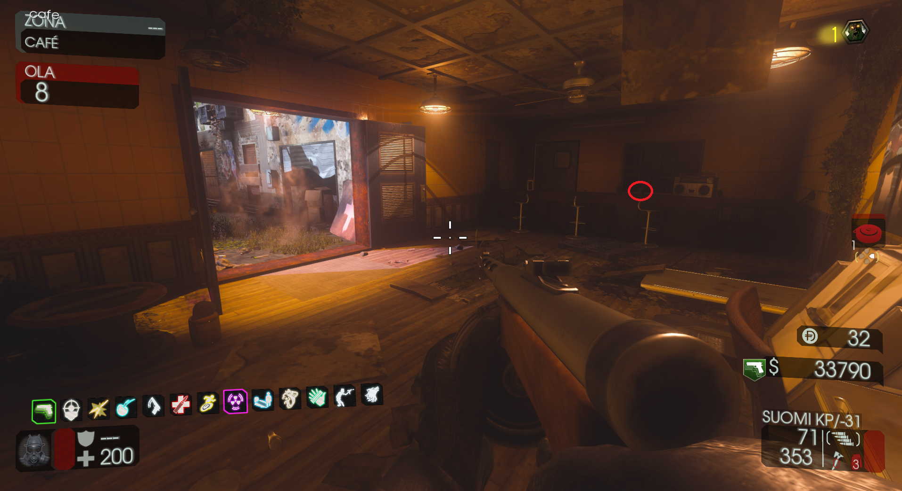
1. En la sala del Jügger-Nog.
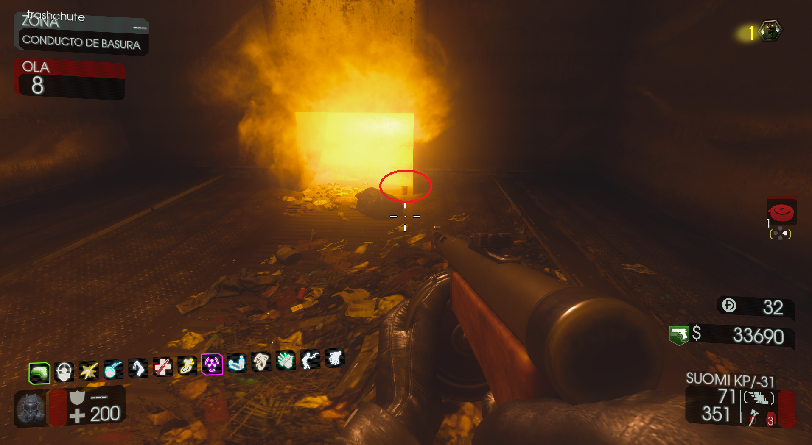
2. En el Conducto de Basura.
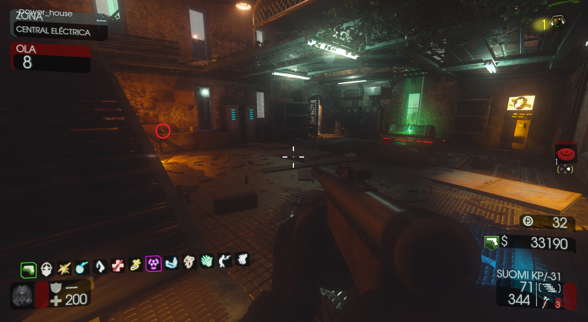
3. En la planta baja de Electricidad.
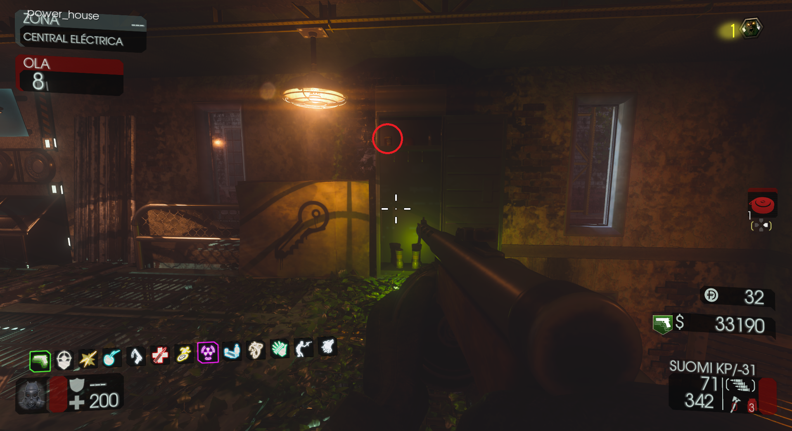
4. En la taquilla de Electricidad.
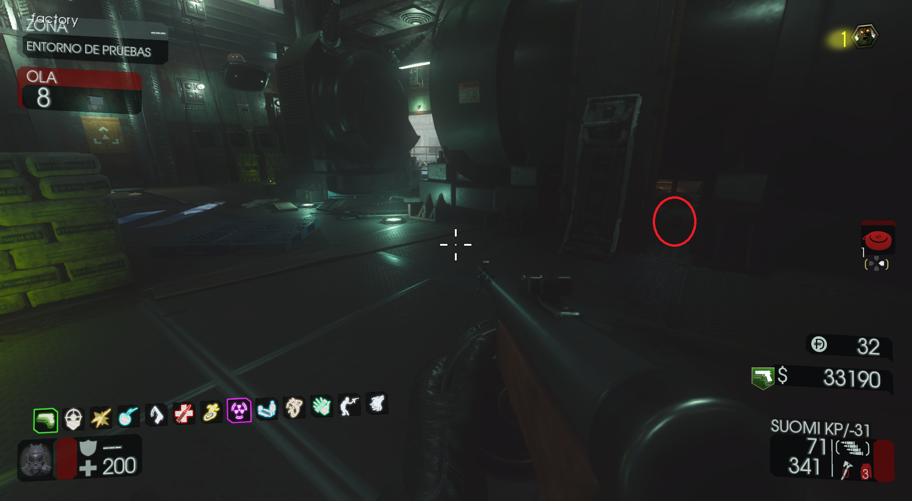
5. Bajo el generador en los Terminales.
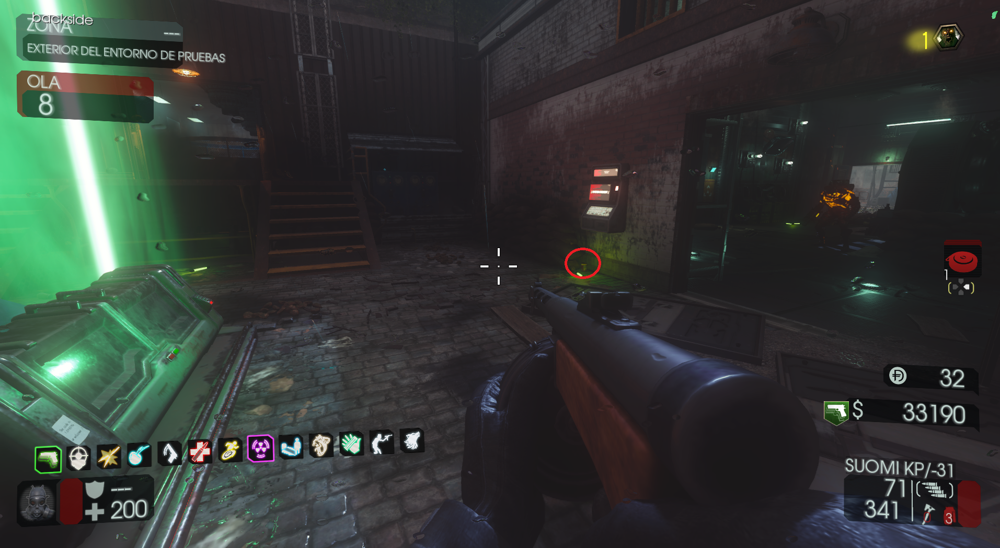
6. En el exterior de Terminales y el Agua.
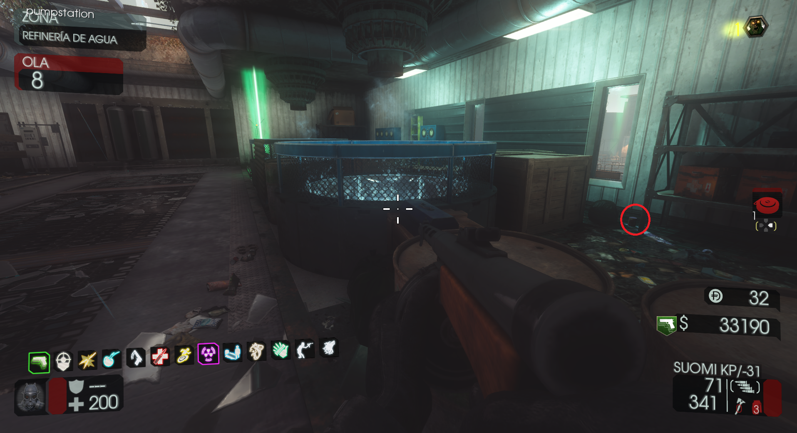
7. En la refinería de Agua, en la zona detrás de la caja.
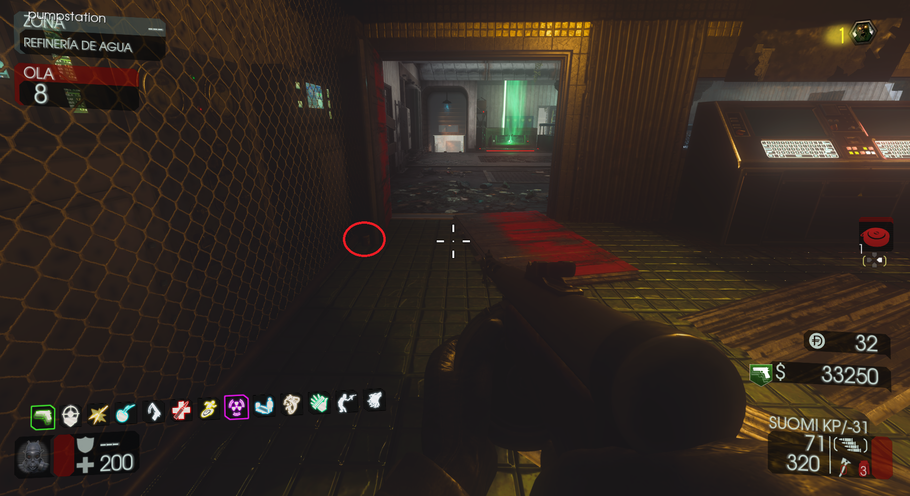
8. En la refinería de Agua, cerca del botón para el PaP.
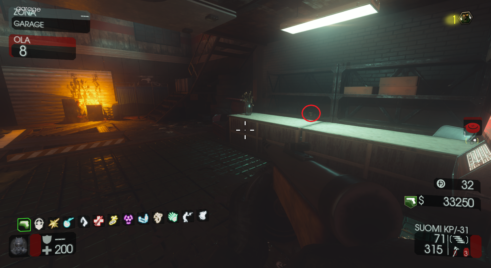
9. En el Garaje, detrás del mostrador.
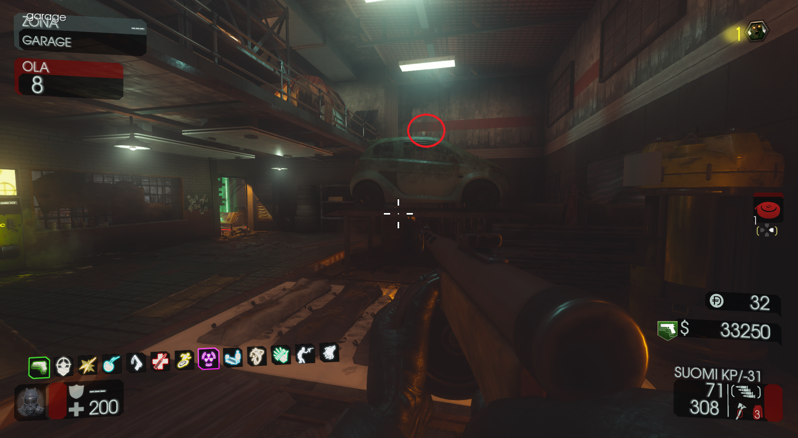
10. En el Garaje, encima del coche.
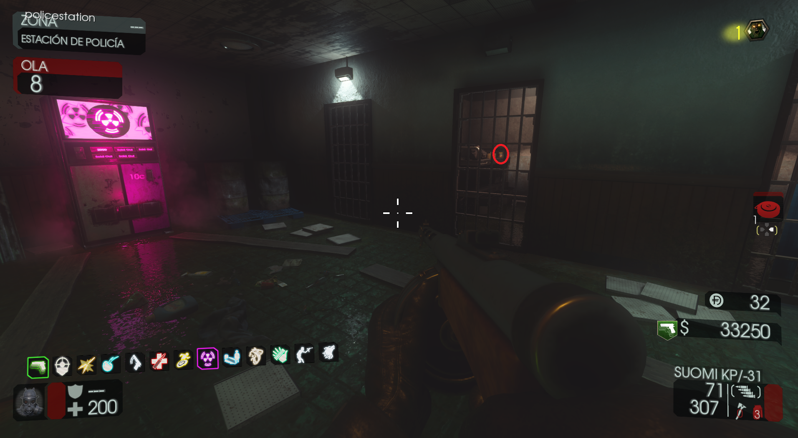
11. En una celda de la Policía.
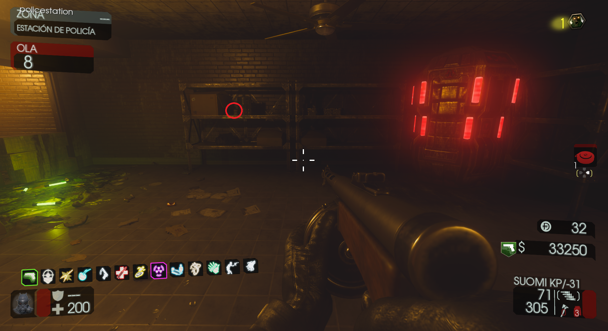
12. En una estantería, en la planta de arriba de la Policía.
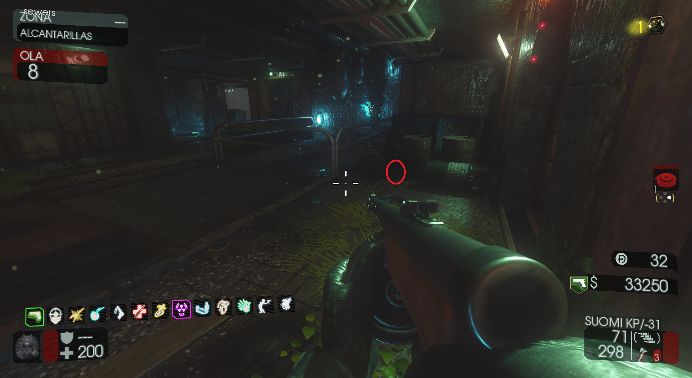
13. Enfrente de la zona de la Guadaña, en Alcantarillas.